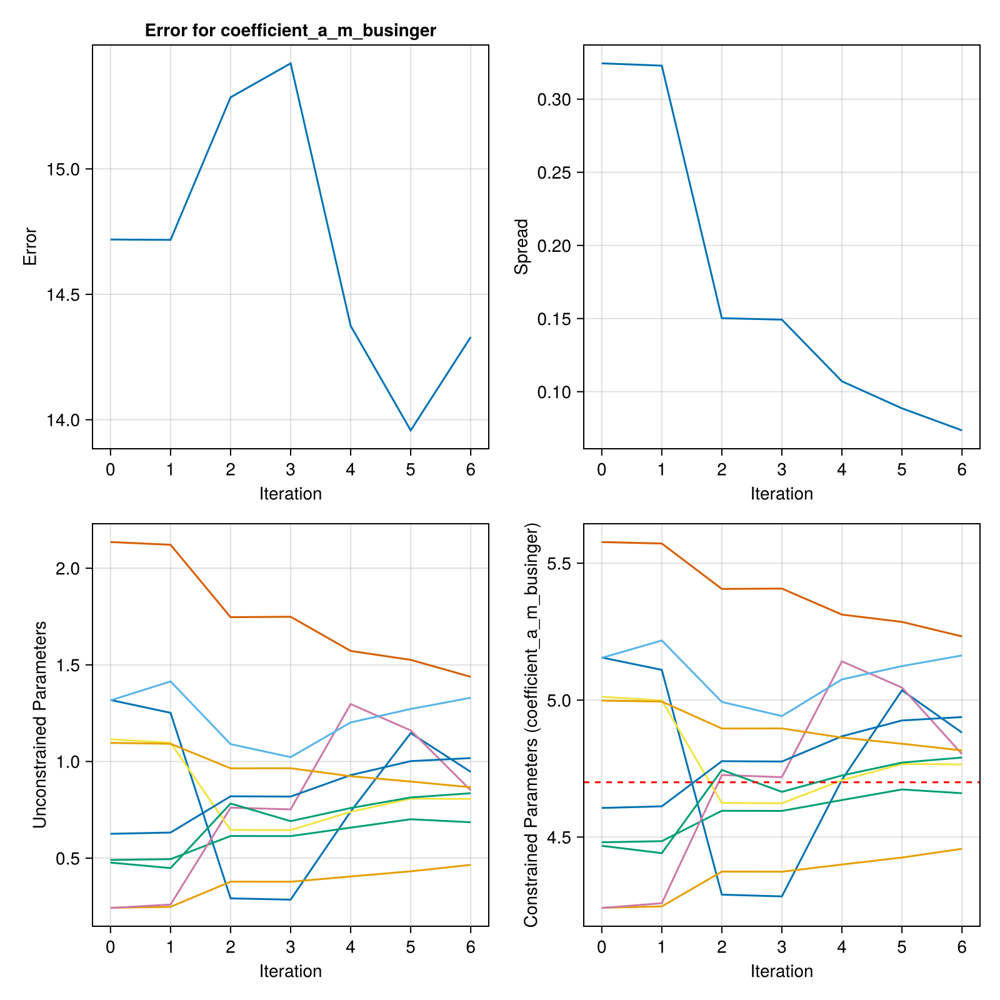
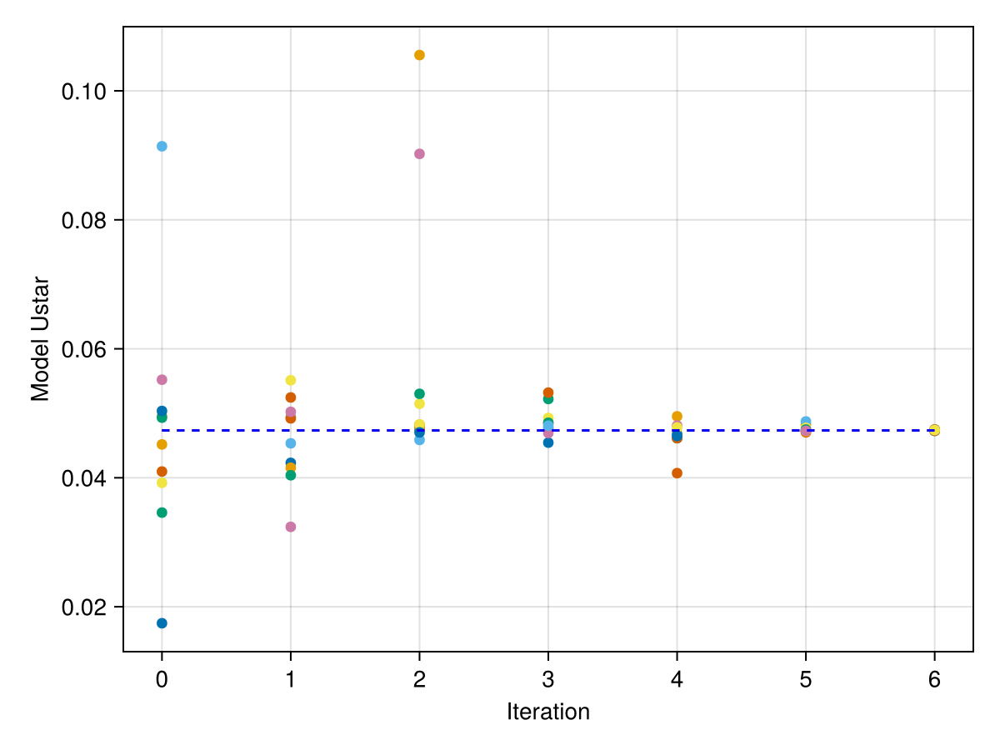

Experiment Set Up Guide for ClimaAtmos
Please read this entire guide before setting up an experiment. This guide assumes familiarity with ClimaAtmos and a basic understanding of Ensemble Kalman Inversion (EKI). Because moderate resolution ClimaAtmos runs need to be run with MPI and/or on GPU, this example demonstrates how to set up a perfect model example calibration (i.e., generating the synthetic "true" data with the same model that we are calibrating with towards a known set of parameters).
Summary
For a perfect model scenario, observations are generated by running the model and then processing the diagnostic output through the constructed observation map.
To calibrate parameters, you need:
- Atmos model configuration
- EKP configuration
- Prior parameter distributions
- Truth and noise data
- Observation map script with a function
observation_map(iteration)
These components are detailed in the guide below. Examples of all of these can also be found in ClimaAtmos in calibration/experiments/sphere_held_suarez_rhoe_equilmoist
First, create a folder for your experiment with a descriptive name in the calibration/experiments/ folder. All of the components described below will be stored in this folder.
Atmos Configuration File
One ClimaAtmos configuration YAML file will be used to run all simulations in the calibration. The only changes between model runs are the parameters selected for calibration. This is a typical Atmos YAML file, but it must be named model_config.yml.
If your configuration requires a parameter TOML file, ensure that the toml entry in your configuration is an absolute path or a correctly configured relative path.
When targeting a global or otherwise costly simulation, it may be worth it to optimize your timestep dt as well as your timestepping algorithm, ode_algo. Turning off default diagnostics can increase performance as well.
Restart File (optional)
The restart file is a snapshot of the model state which will be used to spin-off all ensemble members' forward model runs.
Once you have settled on a configuration, follow these steps to generate a restart file:
- Run ClimaAtmos with your configuration to determine the time it takes for the simulation to reach an equilibrium state.
- Generate a restart file by setting
dt_save_state_to_diskin the model configuration to the equilibrium timestamp. - Transfer the file to your experiment directory and enter the relative path into your atmosphere configuration file:
restart_file: experiments/experiment_name/restart_file.hdf5A restarted simulation starts from the saved date of the restart file. A restart file saved at 200 days and a t_end of 201 days will only run for 1 simulated day:
restart_file: experiments/experiment_name/day200.hdf5
t_end: 201 daysPrior Distribution File
First, create your TOML file in your experiment folder. For each calibrated parameter, create a prior distribution with the following format:
[name]
type = "float"
prior = "constrained_gaussian(name, mean, stdev, upper_bound, lower_bound)"Note that the prior distribution here is in constrained space. When using other constructors are in unconstrained, such as Parameterized(Normal(0,1)), and need to be constrained by an additional field constraint, which constrains the distribution in parameter space.
Constraint constructors:
- Lower bound:
bounded_below(0) - Upper bound:
bounded_above(2) - Upper and lower bounds:
bounded(0, 2)
The calibration tools are effective when working with unconstrained parameters (u), whereas physical models typically require (partially-)bounded parameters (φ). To satisfy both conditions the ParameterDistribution object contains maps between these two spaces. The drawback is that the prior must be defined in the unconstrained space.
Observation Map
The observation map is applied to process model output diagnostics into the exact observable used to fit to observations. In a perfect model setting it is used also to generate the observation.
These requirements arise from the update step, which runs the observation_map function. This function must load in model diagnostics for each ensemble member in the iteration and construct an array arr = Array{Float64}(undef, dims..., ensemble_size) such that arr[:, i] will return the i-th ensemble member's observation map output. Note this floating point precision is required for the EKI update step.
In the update step of EKI, the array will be saved in a JLD2 file named G_ensemble.jld2 in the iteration folder of the output directory.
As an example, in observation_map function in the sphere_held_suarez_rhoe_equilmoist experiment, we have the following sequence:
First, construct the array to store the ensemble's observations. Then, for each ensemble member m:
- Load in the model diagnostic output, in this case 60-day air temperature averages.
- Call
process_member_data(m)and stores the result in the output array.
Pseudocode for observation_map(iteration):
function observation_map(iteration)
# Get Configuration
config_file = joinpath("calibration", "sphere_held_suarez_rhoe_equilmoist")
config = ExperimentConfig(config_file)
ensemble_size = config.ensemble_size
# Setup output array
# dims = size of individual member observation map output
dims = 1
G_ensemble = Array{Float64}(undef, dims..., ensemble_size)
for m in 1:ensemble_size
ta = load_member_diagnostics(m)
# Compute observation map for the member
G_ensemble[:, m] = process_member_data(ta)
end
return G_ensemble
endprocess_member_data(m) then does the following:
- Removes the first two samples to ensure an equilibrium state
- Averages across latitude and longitude
- Extracts the second height slice
- Returns the third sample in an array
Pseudocode for process_member_data(m):
function process_member_data(ta; output_variance = false)
# Cut off first two points to ensure equilibrium, grab second height slice
ta_second_height = ta[3:size(ta)[1], :, :, 2]
# Average over long and latitude
area_avg_ta_second_height =
longitudinal_avg(latitudinal_avg(ta_second_height))
# Take the third sample
observation = [area_avg_ta_second_height[3]]
return observation
endIf you are running a perfect-model experiment and generating truth data from ClimaAtmos itself, you may find it useful to create a kernel function to compute the observation map for each ensemble member. You can use this to run the default simulation's diagnostic output through the observation map and save the truth data and noise.
Generating Truth Data
The truth data must be an array of observations with the same dimensions as an individual ensemble member's entry in the observation map (arr[:, i] from above).
The noise is the sample covariance of the truth data. The dimension of each truth data sample determines how many samples you need to generate. Covariance estimation techniques may be required for high dimensional truth data.
Save a single sample from the observations and the noise in separate JLD2 files. These will be read in when constructing the EKP object. For sphere_held_suarez_rhoe_equilmoist, these are saved as obs_mean.jld2 and obs_noise_cov.jld2 respectively. To inspect them, start julia --project=experiments and run:
import JLD2
experiment_path = joinpath("experiments", "sphere_held_suarez_rhoe_equilmoist")
truth = JLD2.load_object(joinpath(experiment_path, "obs_mean.jld2"))
noise = JLD2.load_object(joinpath(experiment_path, "obs_noise_cov.jld2"))For full reproducibility, create and store a script that generates the truth data. If running a perfect-model scenario, the script should run the model and use the resulting diagnostic output to generate the truth data.
EKP Configuration
Your EKP configuration must supply the following:
n_iterations, the number of iterations to runensemble_size, the ensemble sizeprior, the prior parameter distributionsobservations, the observational datanoise, the covariance of the observational dataoutput_dir, the folder where you want calibration data and logs to be output. This must be the same as theoutput_dirin the model configuration file.
These can be turned into an ExperimentConfig, a convenience struct to use with the calibrate function:
experiment_config = ExperimentConfig(; n_iterations, ensemble_size, prior, observations, noise, output_dir)
calibrate(experiment_config)For more information, see ExperimentConfig in the API reference.
These fields can also be placed into a YAML file and read into the struct via ExperimentConfig(filepath)
Example YAML file:
output_dir: output/sphere_held_suarez_rhoe_equilmoist
prior: prior.toml
ensemble_size: 10
n_iterations: 3
observations: obs_mean.jld2
noise: obs_noise_cov.jld2Plotting Results
It may be useful to generate convergence plots to summarize your experiments. The postprocessing.jl file in surface_fluxes_perfect_model experiment provides a decent template.
Sample plots from surface_fluxes_perfect_model:  